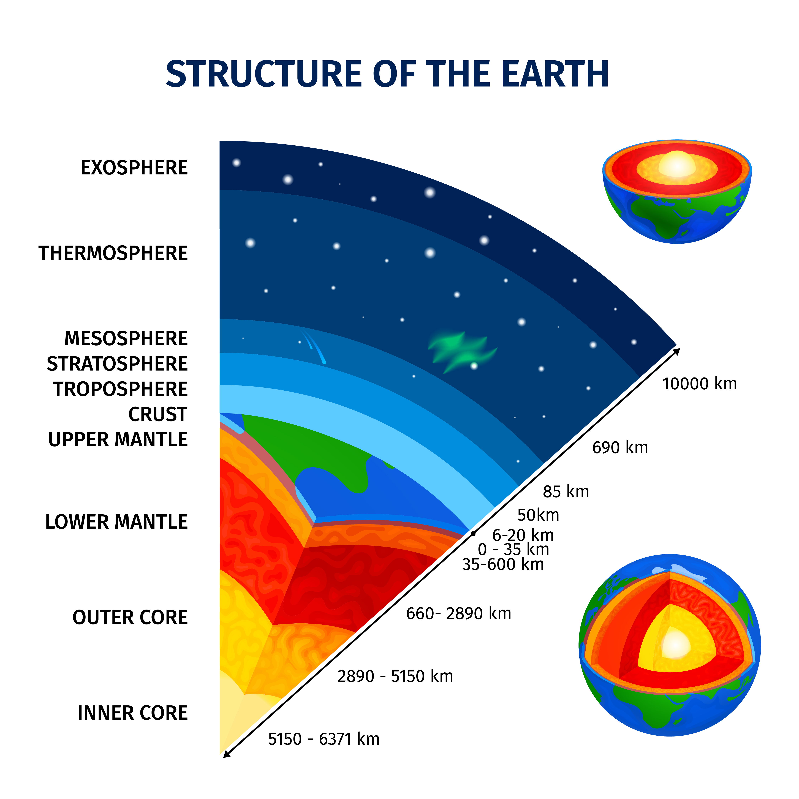

Struktur Bumi

bumi adalah planet yang ada di tata surya dan satu satunya yang sempurna untuk hunian
makhluk hidup selain terdapat air bumi juga memiliki lapisan atmosfer yang melindungi
kita dari paparan radiasi matahari sehingga suhunya aman bagi makhluk hidup. bumi yang kita
tinggali ternyata terbagi menjadi beberapa lapisan pergerakan pada lapisan bumi dapat
dirasakan contohnya adalah ketika terjadi gempa bumi. Bumi pada dasarnya terdiri dari empat lapis, yaitu kerak yang menjadi lapisan terluar dan menjadi tempat tinggal makhluk hidup, mantel yang berfungsi untuk melindungi inti bumi dan yang terakhir ada inti bumi yang memiliki suhu yang sangat tinggi dan tersusun dengan campuran logam
Kerak Bumi

Kerak bumi merupakan lapisan yang terluar dan tipis dibandingkan lapisan lainnya, terdapat 2 macam lapisan kerak bumi yaitu kerak benua (daratan) dan kerak samudra (lautan). Kerak benua memiliki ketebalan 30 hingga 70 kilometer, sementara kerak samudra memiliki ketebalan 6 hingga 11 kilometer
Pada kerak bumi terdapat proses endogen. Proses endogen adalah proses yang disebabkan oleh energy di dalam bumi yang menyebabkan permukaan bumi tidak rata. Proses endogen ini yang menyebabkan terbentuknya pegunungan dan bukit bukit. Proses endogen terbentuk dari 3 macam yaitu tektonisme (retakan atau patahan) vulkanisme (keluarnya magma dari perut bumi) dan seisme (gempa bumi)
Mantel Bumi
Mantel bumi merupakan lapisan yang paling tebak dengan ketebalan mencapai 2.900 kilometer. Mantel bumi juga disebut sebagai lapisan astenofer karena berfungsi untuk melindungi inti bumi. Berdasarkan materi penyusunnya mantel bumi dikategorikan menjadi 2 yakni mantel luar dan mantel dalam
1. Mantel Luar
lebih tipis dari mantel dalam dan berada di sekitar 10-300 kilometer dibawah permukaan bumi temperaturnya berada di sekitar 1.400 – 3.000 kelvin. Sehingga terdapat aluminium, besi, kalsium, natrium dan magnesium
2. Mantel Dalam
Berada pada kedalaman 300-2.900 kilometer dibawah permukaan bumi suhunya mencapai 3.000 derajat kelvin. Sehingga mantel dalam tersusun atas logam cair.
Inti Bumi

Inti bumi merupakan lapisan yang paling dalam, inti bumi dibagi menjadi 2 yaitu lapisan inti luar dan lapisan inti dalam
1. Lapisan Inti Luar
terletak di kedalaman 2.890 hingga 5.150 kilometer dibawah permukaan bumi. Suhu inti luar sekitar 4.00 hingga 5.000 derajat kelvin
2. Lapisan Inti Dalam
berada di pusat dan merupakan bagian terpanas dari planet bumi, lapisan ini terdapat di kedalaman 5.000 hingga 6.000 kilometer. Suhunya dapat mencapai 5.500 derajat kelvin